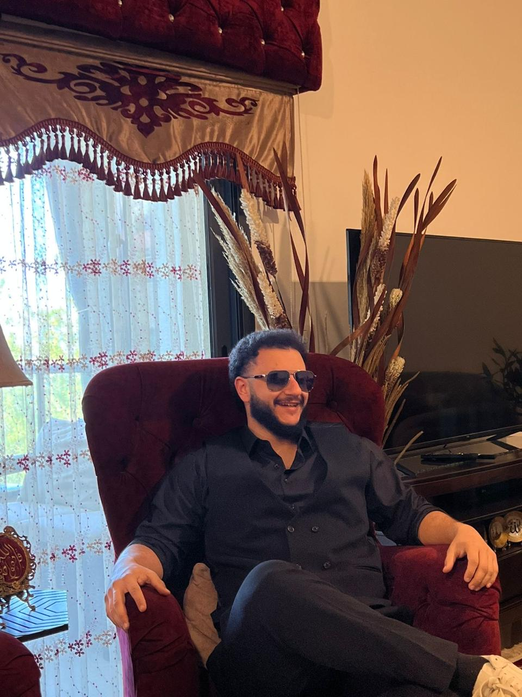
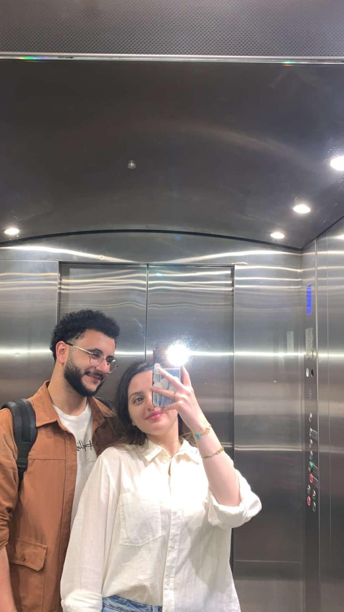

RIWA vs. FADEL
An entirely independent, scientifically rigorous, legally binding investigation into one suspiciously deleted conversation and one man’s catastrophic decision-making.
*Website coded by Fadel. Auditing also performed by Fadel. Please ignore.
Meet the Presiding Authority: Aya
Aya
Cute princess. White and pure from the outside and the inside. Sweet, adorable, innocent-looking… and sometimes genuinely scary.
Court records confirm that underestimating Aya has historically been a poor survival strategy.
Meet the Defendant: Fadel

Fadel
Loves Aya more than anything. Doesn't lie to her, tries to be transparent, very nice, very respectful, and loves from his heart.
Conflict of interest disclosure: Fadel programmed this court, represents himself, and somehow still expects a fair trial.
Before we begin, the court must establish one basic fact.
Was deleting the conversation an extremely suspicious-looking move?
Notice: answers inconsistent with common sense may experience technical difficulties.
The court has reached its first shocking conclusion.
Fadel may not be guilty of lying.
Unfortunately, he is showing very strong symptoms of “making himself look guilty for absolutely no reason.”
Review the classified exhibits.
Tap each file to declassify it. The prosecution has been waiting for this moment.
Exhibit A
Riwa knew the other girl existed.
Exhibit B
Fadel deleted the conversation anyway.
Exhibit C
Deleting it then saying “trust me” was, scientifically speaking, not ideal.
Independent forensic results are in.
The laboratory used advanced mathematics, questionable assumptions, and one calculator.
Margin of error: enormous.
Riwa, as judge, please select the fairest statement.
The court promises not to interfere with your answer. This promise has not been reviewed by legal counsel.
The red button has already contacted witness protection.
The court will now examine motive.
Please answer carefully. The software has already formed an opinion and is emotionally attached to it.
If Fadel actually wanted something romantic with the other girl, which plan makes more sense?
Behavioral profile of the defendant.
Choose the description most consistent with the documented events.
After the argument, Fadel spent days explaining himself, then stopped when Riwa genuinely asked for distance. This behavior most closely resembles:
A dangerous experiment: applying logic.
The court understands this may be uncomfortable for everyone involved.
Can somebody make a decision that looks incredibly suspicious without actually lying?
The defense calls its strongest witness: common sense.
This witness is considered unreliable in approximately 73% of Fadel-related incidents.
Which verdict best fits the evidence so far?
Intent vs. execution.
The court will now investigate whether good intentions can coexist with impressively bad decisions.
If someone has good intentions but handles a situation badly, does that automatically make the intentions fake?
The transparency paradox.
A very serious legal phrase invented approximately six seconds ago.
If Fadel wanted to hide the existence of the other girl completely, would telling Aya about her in the first place be a particularly brilliant strategy?
Respecting the judge's ruling.
The investigation now reviews what happened after Aya asked for distance.
After trying to explain himself, Fadel eventually stopped pushing and respected Aya's request for distance. Does that count for anything?
One last question before the prosecution speaks.
The court asks both sides to stop being dramatic for approximately nine seconds.
After everything Aya and Fadel have shared, is it at least possible that he cares deeply about her even though he handled this situation badly?
Objection sustained.
Riwa being suspicious was not irrational. The defendant removed the one thing that could have made his explanation easier to believe.
“Yes, Your Honor. In hindsight, that was an impressively bad strategy.”
For the record, one distinction still matters.
Okay, one serious minute.
Deleting the conversation was a bad decision. Even though I wasn’t lying to you, I understand why deleting it made everything look worse, made my explanation harder to believe, and hurt your trust in me.
I’m not asking this website to decide who was “right.” I just wanted to acknowledge that part properly: I could have handled it much better, and I’m sorry that I didn’t.
The Honorable Court of Riwa has concluded proceedings.
Verdict
- Guilty of terrible decision-making.
- Guilty of looking unbelievably suspicious.
- Guilty of requiring a full website to explain one bad delete button.
- Not convicted of lying by this extremely biased court.
Sentence
- Lifetime ban from deleting important chats during arguments.
- Mandatory use of brain before pressing “delete.”
- One official laugh from Riwa, if available.
Official record sealed.
The court thanks Judge Riwa for reviewing the evidence, surviving the defense team, and tolerating a justice system coded by the defendant.
This ruling is final, unless Riwa says otherwise. In which case it was never final.
No jokes for this part.
The court is closed. This is just me talking to you.

Aya, I really didn't want things between us to go the way they did. I never wanted one bad situation and one terrible decision from me to turn into something that hurt you or made you feel like you couldn't trust me.
I know deleting that conversation made everything look so much worse. I understand why you became suspicious, and I understand why my words became difficult to believe after that. I wish I had handled it differently from the beginning.
But through all of this, one thing never changed for me: I love you so much. You mean more to me than I can properly explain in one website, one argument, or even all the stupid jokes in this court case.
The last two years with you have meant a lot to me. The conversations, the laughs, the stupid moments, the serious moments, and simply having you in my life are things I never treated as meaningless.
I wasn't trying to hurt you, replace you, or make you feel unimportant. I handled something badly, and I hate that it ended up making you feel the opposite of what I actually feel about you.
I don't want this page to pressure you into anything. I just wanted to say this properly: I'm sorry for how I handled it, I'm sorry for the hurt it caused, and I love you from my heart.
And for the official record… I still maintain that I wasn't lying. I was simply, as this entire investigation has scientifically proven, an idiot with very good intentions. 🤦♂️